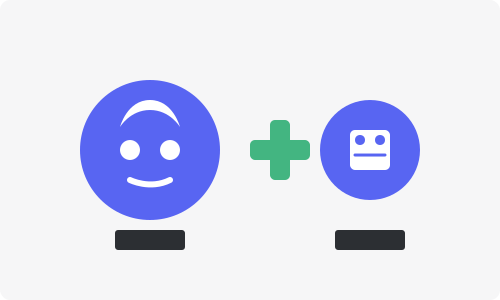
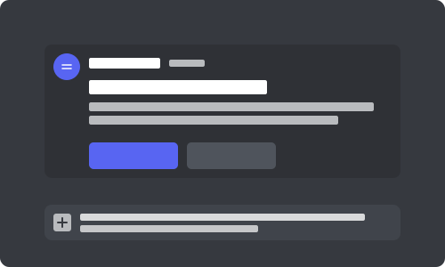
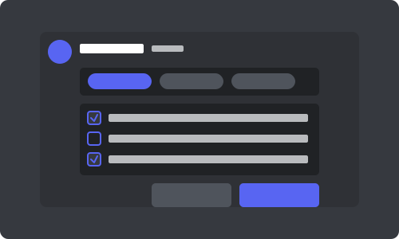

How It Works
Simple channel management in just a few steps
1
Invite the Bot
Add Discord Channel Deleter Bot to your Discord server with the proper permissions.
2
Use the /delete-channels Command
Type the slash command in any channel to start the cleanup process.
3
Select Channels to Keep
Use the filter menu to navigate through channels and select the ones you want to keep.
4
Confirm and Execute
Review your selection and confirm to delete all other channels.